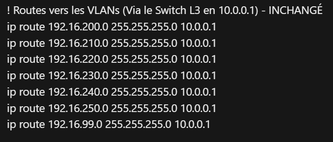

Projet 1.02 – S'initier aux réseaux informatiques
Contexte & Cahier des charges
L'initialisation aux architectures de réseaux locaux commutés et routés constitue le socle technique indispensable pour un technicien R&T. Le cahier des charges de ce projet imposait le déploiement sécurisé d'une infrastructure complète, incluant la configuration d'équipements actifs (Cisco) et l'administration système sous Linux Debian.
Ce projet s'est déroulé en deux temps : une phase de conception architecturale en groupe où j'avais la charge exclusive de la configuration du routeur de bordure, et une phase d'évaluation individuelle pratique (TP noté) axée sur la maîtrise en ligne de commande (CLI) de l'environnement Linux, le tout ponctué par un examen théorique certifiant (CCNA).
Démarche de production : De la conception au routage
La réalisation de cette infrastructure a nécessité une division stricte des tâches et une appropriation rigoureuse des commandes matérielles.
Étape 1 : Planification et Travail Collaboratif
Apprentissage mobilisé (AC11.02) : Comprendre l'architecture des systèmes numériques. Bien que le travail en groupe soit essentiel pour la cohérence du plan d'adressage IP et l'interconnexion physique, j'ai assumé la responsabilité individuelle du paramétrage du routeur principal. L'objectif était d'assurer la passerelle entre notre réseau local (switch de cœur de réseau) et l'extérieur (box internet).
Étape 2 : Configuration Cisco IOS et Routage Inter-VLAN
Apprentissage mobilisé (AC11.03) : Configurer les fonctions de base du réseau local. J'ai sécurisé le routeur (mots de passe chiffrés, accès SSH) et configuré les interfaces physiques de transit.
🚨 Analyse d'incident : Échec du routage vers les sous-réseaux (VLANs)
Le problème : Mon objectif initial était simplement de relier matériellement nos commutateurs au routeur. Cependant, lors des tests de connectivité (Ping), le routeur n'arrivait pas à joindre les machines situées dans les différents VLANs créés par mes camarades. Les paquets étaient systématiquement rejetés.
⚙️ Analyse et remédiation technique :
En inspectant la table de routage, j'ai compris que le routeur ignorait l'existence logique des VLANs (ex: 192.16.200.0/24) gérés par le switch de niveau 3 (IP: 10.0.0.1). Pour remédier à cela, j'ai injecté une série de routes statiques en CLI (ip route 192.16.200.0 255.255.255.0 10.0.0.1). Cette action a permis d'instruire le routeur sur le chemin exact à emprunter pour chaque trame, rétablissant la connectivité totale.
📸 Preuve technique : Résolution du routage IP

Cette capture de mon fichier de configuration met en évidence l'implémentation des routes statiques pointant vers la passerelle du Switch L3 (10.0.0.1), prouvant la résolution du problème d'adressage logique.
Étape 3 : Évaluation pratique individuelle sous Linux Debian
Apprentissage mobilisé (AC11.02) : Interagir avec le système d'exploitation. La seconde phase du projet était un TP noté individuel exigeant l'administration d'un système Debian uniquement en lignes de commandes (création d'identifiants, gestion des privilèges root, gestion des groupes).
🚨 Analyse d'incident : Lenteur d'exécution sur la gestion des utilisateurs
Le problème : Soumis à une contrainte de temps stricte lors de l'examen, ma méthode initiale de création d'utilisateurs via des scripts interactifs bloquait ma progression. Je perdais un temps précieux à répondre manuellement aux invites du système (mots de passe, informations de profil) pour chaque compte.
⚙️ Analyse et remédiation technique :
J'ai pris du recul sur mon utilisation de la CLI. En consultant rapidement les manuels système (man useradd), j'ai optimisé mon approche en générant les identifiants, les répertoires personnels et les affectations de groupes en une seule ligne de commande complexe grâce aux arguments paramétrés (flags). Cela a considérablement accéléré mon flux de travail et m'a permis de finaliser l'épreuve dans les temps.
📸 Preuve technique : Administration CLI

Cette trace de mon terminal Debian démontre ma capacité à optimiser l'administration système en concaténant des arguments d'exécution avancés directement dans l'interface CLI.
Étape 4 : Validation théorique (Examen CCNA)
Le projet s'est conclu par un examen final en salle sur la plateforme Cisco NetAcad (CCNA - Présentation des réseaux). Cette évaluation sous format QCM a permis de valider officiellement mon apprentissage des couches du modèle OSI, de l'adressage IPv4/IPv6 et des concepts de commutation Ethernet abordés tout au long du module.
Bilan du Projet & Prise de recul
Ce projet mixte a renforcé ma polyvalence. Il m'a appris que la configuration d'un équipement de cœur de réseau exige une compréhension globale de la topologie logique (comme les VLANs gérés par mes camarades), et que l'efficacité sous Linux repose sur la maîtrise approfondie des arguments en ligne de commande.
Compétences consolidées
Implémentation de tables de routage statique sous Cisco IOS, administration accélérée des utilisateurs sous Linux Debian, et validation théorique des protocoles via l'examen CCNA.
Évolution des pratiques
À l'avenir, je systématiserai l'utilisation de protocoles de routage dynamique (comme OSPF) pour éviter la saisie manuelle et chronophage des routes statiques lors de l'ajout de nouveaux sous-réseaux.
Validation des apprentissages finaux